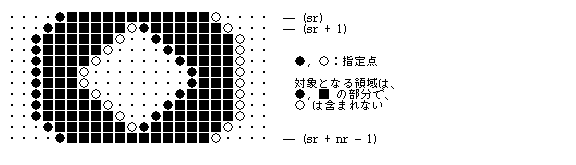
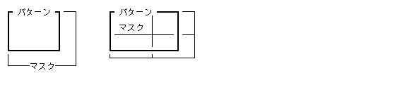
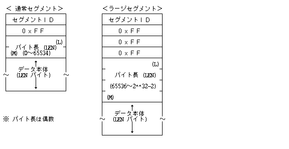

Графічні сегменти (Figure Fusen) призначені для представлення векторних та растрових графічних елементів у форматі TAD. Перелік основних типів графічних сегментів та їхні ідентифікатори (ID) наведено у таблиці нижче.
| Графічний сегмент | ID | |
|---|---|---|
| Графічний примітив (Figure Primitive) | TS_FPRIM | (0xB0) |
| Визначення графіки (Figure Definition) | TS_FDEF | (0xB1) |
| Графічна група (Figure Group) | TS_FGRP | (0xB2) |
| Графічний макрос / виклик (Figure Macro/Call) | TS_FMAC | (0xB3) |
| Графічні атрибути (Figure Attribute) | TS_FATTR | (0xB4) |
| Сторінка графічного сегмента (Figure Page Fusen) | TS_FPAGE | (0xB5) |
| (Зарезервовано) | ------ | (0xB6〜0xBD) |
| Замітка графічного сегмента (Figure Memo Fusen) | TS_FMEMO | (0xBE) |
| Графічний сегмент додатка (Application Figure Fusen) | TS_FAPPL | (0xBF) |
Кожен графічний сегмент містить ідентифікатор типу (ID). Ідентифікатори підтипів від 0 до 127 визначені специфікацією TAD як системні, а значення від 128 до 255 відведені для специфічних розширень додатків (Application Fusen). Для сегментів додатків указується додатковий ідентифікатор додатка.
Графічні сегменти, як і інші види сегментів TAD, можуть розширюватися додатками. Додатки, які не підтримують окремі графічні сегменти, можуть безпечно пропускати їх без порушення обробки решти документа.
Сегмент графічних примітивів (TS_FPRIM) визначає елементарні геометричні фігури. Примітиви поділяються на заповнені фігури, контурні (лінійні) фігури, маркерні позначки та растрові зображення. Вони безпосередньо відображаються функціями графічних примітивів (Display Primitives).
<Заповнені фігури>
Прямокутник (Rectangle) -- Заповнений прямокутник Скруглений прямокутник -- Прямокутник зі скругленими кутами Еліпс / Коло (Ellipse / Circle) -- Заповнений еліпс або коло Сектор (Pie / Sector) -- Сектор, обмежений дугою та радіусами Хорда (Chord) -- Сегмент, обмежений дугою та хордою Багатокутник (Polygon) -- Заповнений багатокутник
<Контурні / Лінійні фігури>
Відрізок прямої (Line) -- Лінійний відрізок Дуга (Arc) -- Дуга еліпса або кола Ламана лінія (Polyline) -- Послідовність з'єднаних відрізків Крива / Сплайн (Curve) -- Довільна крива або В-сплайн Маркери (Marker) -- Набір точкових маркерних позначок Трапецієподібний заповнений контур-- Заповнення областей по рядках сканування
Кожен графічний примітив містить параметри малювання, які визначають режим накладання (Mode), товщину лінії, візерунки лінії та заповнення, а також координати.
<Режим малювання (Mode)>
Режим малювання задає логічну операцію між пікселями джерела (src) та пікселями призначального зображення (dest):
0 STORE : (src) → (result) (Прямий запис)
1 XOR : (src) XOR (dest) → (result) (Виключне АБО)
2 OR : (src) OR (dest) → (result) (Логічне АБО)
3 AND : (src) AND (dest) → (result) (Логічне І)
4 CPYN : (NOT (src)) → (result) (Інверсія джерела)
5 XORN : (NOT (src)) XOR (dest) → (result)
6 ORN : (NOT (src)) OR (dest) → (result)
7 ANDN : (NOT (src)) AND (dest) → (result)
8〜255 Зарезервовано
<Атрибут лінії (l_atr)>
Параметр l_atr описується величиною типу UH (16 біт), де молодші 8 біт задають товщину лінії у пікселях, а старші 8 біт — ідентифікатор стилю лінії.
TTTT TTTT WWWW WWWW
W : Товщина лінії (Line Width) (8 біт) (0〜255 пікселів)
T : ID стилю лінії (8 біт) (0〜255)
LEN : 18
SUBID: 0
ATTR : UB mode -- Режим малювання (Mode)
DATA : UH l_atr -- Атрибути лінії (Line Attribute)
UH l_pat -- ID візерунка контуру (Line Pattern ID)
UH f_pat -- ID візерунка заповнення (Fill Pattern ID)
UH angle -- Кут обертання (Angle)
RECT frame -- Описовий прямокутник (Frame)
LEN : 22
SUBID: 1
ATTR : UB mode -- Режим малювання (Mode)
DATA : UH l_atr -- Атрибути лінії (Line Attribute)
UH l_pat -- ID візерунка контуру (Line Pattern ID)
UH f_pat -- ID візерунка заповнення (Fill Pattern ID)
UH angle -- Кут обертання (Angle)
UH rh -- Горизонтальний радіус скруглення
UH rv -- Вертикальний радіус скруглення
RECT frame -- Описовий прямокутник (Frame)
LEN : 18
SUBID: 2
ATTR : UB mode -- Режим малювання (Mode)
DATA : UH l_atr -- Атрибути лінії (Line Attribute)
UH l_pat -- ID візерунка контуру (Line Pattern ID)
UH f_pat -- ID візерунка заповнення (Fill Pattern ID)
UH angle -- Кут обертання (Angle)
RECT frame -- Описовий прямокутник (Frame)
LEN : 26
SUBID: 3
ATTR : UB mode -- Режим малювання (Mode)
DATA : UH l_atr -- Атрибути лінії (Line Attribute)
UH l_pat -- ID візерунка контуру (Line Pattern ID)
UH f_pat -- ID візерунка заповнення (Fill Pattern ID)
UH angle -- Кут обертання (Angle)
RECT frame -- Описовий прямокутник (Frame)
PNT start -- Початкова точка дуги
PNT end -- Кінцева точка дуги
LEN : 26
SUBID: 4
ATTR : UB mode -- Режим малювання (Mode)
DATA : UH l_atr -- Атрибути лінії (Line Attribute)
UH l_pat -- ID візерунка контуру (Line Pattern ID)
UH f_pat -- ID візерунка заповнення (Fill Pattern ID)
UH angle -- Кут обертання (Angle)
RECT frame -- Описовий прямокутник (Frame)
PNT start -- Початкова точка дуги
PNT end -- Кінцева точка дуги
LEN : Змінна
SUBID: 5
ATTR : UB mode -- Режим малювання (Mode)
DATA : UH l_atr -- Атрибути лінії (Line Attribute)
UH l_pat -- ID візерунка контуру (Line Pattern ID)
UH f_pat -- ID візерунка заповнення (Fill Pattern ID)
UH round -- Радіус закруглення кутів
UH np -- Кількість вершин (np > 2)
PNT pt[np] -- Масив координат вершин (np точок)
LEN : 14
SUBID: 6
ATTR : UB mode -- Режим малювання (Mode)
DATA : UH l_atr -- Атрибути лінії (Line Attribute)
UH l_pat -- ID візерунка контуру (Line Pattern ID)
PNT start -- Початкова точка відрізка
PNT end -- Кінцева точка відрізка
LEN : 24
SUBID: 7
ATTR : UB mode -- Режим малювання (Mode)
DATA : UH l_atr -- Атрибути лінії (Line Attribute)
UH l_pat -- ID візерунка контуру (Line Pattern ID)
UH angle -- Кут обертання (Angle)
RECT frame -- Описовий прямокутник (Frame)
PNT start -- Початкова точка дуги
PNT end -- Кінцева точка дуги
LEN : Змінна
SUBID: 8
ATTR : UB mode -- Режим малювання (Mode)
DATA : UH l_atr -- Атрибути лінії (Line Attribute)
UH l_pat -- ID візерунка контуру (Line Pattern ID)
UH round -- Радіус закруглення кутів
UH np -- Кількість точок (np > 1)
PNT pt[np] -- Масив координат точок (np точок)
LEN : Змінна
SUBID: 9
ATTR : UB mode -- Режим малювання (Mode)
DATA : UH l_atr -- Атрибути лінії (Line Attribute)
UH l_pat -- ID візерунка контуру (Line Pattern ID)
UH f_pat -- ID візерунка заповнення (Fill Pattern ID)
H type -- Тип кривої (0 = Polyline, 1 = B-Spline)
UH np -- Кількість точок (np > 0)
PNT pt[np] -- Масив керуючих точок (np точок)
LEN : Змінна
SUBID: 10
ATTR : UB mode -- Режим малювання (Mode)
DATA : UH marker -- ID типу символу або значка маркера
UH np -- Кількість точок (np > 0)
PNT pt[np] -- Масив точок розташування маркерів (np точок)
LEN : Змінна
SUBID: 11
ATTR : UB mode -- Режим малювання (Mode)
DATA : UH f_pat -- ID візерунка заповнення (Fill Pattern ID)
UH sy -- Початкова Y-координата (вгорі)
UH nr -- Кількість рядків сканування (nr)
H bx -- Базовий зсув Х-координати (X-offset)
<Для кожного рядка sr від 0 до nr-1>:
UH nh -- Кількість інтервалів перетину
UH h[nh] -- Масив Х-координат інтервалів (nh точок)

Сегмент TS_FDEF задає користувацькі палітри кольорів, маски ліній, кольорові візерунки заповнення, штрихові лінії та власні маркери.
LEN : Змінна
SUBID: 0
ATTR : UB - -- (Зарезервовано)
DATA : UH nent -- Кількість елементів палітри
COLOR col[nent] -- Масив кольорів (nent елементів)
LEN : Змінна
SUBID: 1
ATTR : UB type -- Тип візерунка (0 = 1-бітова маска)
DATA : UH id -- ID візерунка
UH hsize -- Горизонтальний розмір маски
UH vsize -- Вертикальний розмір маски
UB mask[] -- Матриця 1-бітової маски

LEN : Змінна
SUBID: 2
ATTR : UB type -- Тип візерунка
DATA : UH id -- ID візерунка заповнення
UH hsize -- Горизонтальний розмір
UH vsize -- Вертикальний розмір
UH ncol -- Кількість кольорів у візерунку
COLOR fgcol[ncol] -- Масив кольорів переднього плану
COLOR bgcol -- Колір фону
UH mask[ncol] -- ID масок заповнення


LEN : Змінна
SUBID: 3
ATTR : UB type -- Тип стиля лінії
DATA : UH id -- ID штрихової лінії
UH nb -- Кількість байтів у масці штриха
UB mask[nb] -- Бітова маска штрихів

LEN : Змінна
SUBID: 4
ATTR : UB type -- Тип маркера
DATA : UH id -- ID маркера
UH size -- Розмір маркера
COLOR fgcol -- Колір маркера
[UH mask -- ID маски]
Об'єднує кілька графічних примітивів у єдину логічну групу для спільного переміщення або трансформації.
LEN : 4 SUBID: 0 -- Початок групи (Group Begin) ATTR : UB - -- (Зарезервовано) DATA : UH id -- ID групи LEN : 2 SUBID: 1 -- Завершення групи (Group End) ATTR : UB - -- (Зарезервовано)
Дозволяє оголошувати та багаторазово викликати графічні макроси за ідентифікатором ID.
LEN : 4 SUBID: 0 -- Початок оголошення макроса (Macro Begin) ATTR : UB - -- (Зарезервовано) DATA : UH id -- ID макроса LEN : 2 SUBID: 1 -- Завершення оголошення макроса (Macro End) ATTR : UB - -- (Зарезервовано) LEN : 4 SUBID: 2 -- Виклик макроса (Macro Call) ATTR : UB - -- (Зарезервовано) DATA : UH id -- ID макроса для вставки
Керує атрибутами наконечників ліній (стрілки) та матрицями трансформації систем координат.
LEN : Змінна SUBID: 0 ATTR : UB type -- Тип примітива (0: Лінія) DATA : UH arrow -- Бітова маска наконечників стрілок (ES)
LEN : 6, 8, 10
SUBID: 1
ATTR : UB - -- (Зарезервовано)
DATA : H dh -- Зсув по горизонталі (X-offset)
H dv -- Зсув по вертикалі (Y-offset)
[UH hangle -- Кут обертання (0..360)]
[H vangle -- Кут скосу/нахилу (-90..+90)]

Визначає формат графічної сторінки, поля, орієнтацію та колонтитули для векторних графічних документів.
LEN : 14
SUBID: 0
ATTR : UB attr -- Орієнтація паперу та напрямок
DATA : UH length -- Висота сторінки
UH width -- Ширина сторінки
UH top -- Верхнє поле
UH bottom -- Нижнє поле
UH left -- Ліве поле
UH right -- Праве поле
LEN : 10
SUBID: 1
ATTR : UB - -- (Зарезервовано)
DATA : UH top -- Верхнє поле
UH bottom -- Нижнє поле
UH left -- Ліве поле
UH right -- Праве поле
LEN : Змінна SUBID: 3 ATTR : UB attr -- Тип колонтитула DATA : UB data[] -- Вміст колонтитула
LEN : 4 SUBID: 4 ATTR : UB - -- (Зарезервовано) DATA : UH overlay -- Бітова маска фонового накладання
LEN : 4 SUBID: 6 ATTR : B step -- Крок нумерації DATA : UH num -- Початковий номер сторінки
Текстові примітки та коментарі рецензента до графічного сегмента.
LEN : Змінна SUBID: 0 ATTR : UB - -- (Зарезервовано) DATA : UB memo[] -- Символьний рядок замітки
Специфічні розширення графічних даних для прикладних програм.
LEN : Змінна
SUBID: - -- Підтип вкладки додатка
ATTR : UB - -- (Зарезервовано)
DATA : UH appl[3] -- Ідентифікатор додатка (Application ID)
UB param[] -- Параметри та дані додатка
| Тип сегмента | Ідентифікатор ID | Код (Hex) |
|---|---|---|
| Інформаційний сегмент документа | TS_INFO | (0xE0) |
| Початок текстового блоку | TS_TEXT | (0xE1) |
| Завершення текстового блоку | TS_TEXTEND | (0xE2) |
| Початок графічного блоку | TS_FIG | (0xE3) |
| Завершення графічного блоку | TS_FIGEND | (0xE4) |
| Растровий блок зображення | TS_IMAGE | (0xE5) |
| Віртуальний об'єкт (Virtual Body) | TS_VOBJ | (0xE6) |
| Даний вбудований об'єкт | TS_DFUSEN | (0xE7) |
| Файл реального об'єкта | TS_FFUSEN | (0xE8) |
| Системна наліпка / шар | TS_SFUSEN | (0xE9) |
| Сегмент сторінки тексту | TS_TPAGE | (0xA0) |
| Сегмент лінійки та абзацу | TS_TRULER | (0xA1) |
| Сегмент шрифту символів | TS_TFONT | (0xA2) |
| Сегмент підкреслення тексту | TS_TUB | (0xA3) |
| Сегмент атрибутів тексту | TS_TATTR | (0xA4) |
| Сегмент стилю тексту | TS_TSTYLE | (0xA5) |
| (Зарезервовано системні вкладки) | ------ | (0xA6〜0xAC) |
| Змінні текстові поля | TS_TVAR | (0xAD) |
| Замітки тексту | TS_TMEMO | (0xAE) |
| Текстові вкладки додатків | TS_TAPPL | (0xAF) |
| Графічні примітиви | TS_FPRIM | (0xB0) |
| Визначення графіки | TS_FDEF | (0xB1) |
| Графічні групи | TS_FGRP | (0xB2) |
| Графічні макроси | TS_FMAC | (0xB3) |
| Графічні атрибути | TS_FATTR | (0xB4) |
| Графічні сторінки | TS_FPAGE | (0xB5) |
| (Зарезервовано графічні вкладки) | ------ | (0xB6〜0xBD) |
| Замітки графічного сегмента | TS_FMEMO | (0xBE) |
| Графічні вкладки додатків | TS_FAPPL | (0xBF) |
ID : TS_INFO
LEN : Змінна
DATA: UH subid -- ID підтипу інформації
UH sublen -- Довжина даних у байтах
UH data[] -- Масив інформаційних даних
ID : TS_TEXT
LEN : 24
DATA: RECT view -- Описовий прямокутник області перегляду
RECT draw -- Прямокутник області малювання
UNITS h_unit -- Одиниці вимірювання по горизонталі
UNITS v_unit -- Одиниці вимірювання по вертикалі
UH lang -- Код основної мови документа
UH bgpat -- ID фонового візерунка
ID : TS_FIG
LEN : 24
DATA: RECT view -- Прямокутник області перегляду
RECT draw -- Прямокутник області малювання
UNITS h_unit -- Одиниці вимірювання по горизонталі
UNITS v_unit -- Одиниці вимірювання по вертикалі
W ratio -- Масштабний коефіцієнт

ID : TS_VOBJ
LEN : Змінна
DATA: RECT view -- Прямокутник перегляду віртуального об'єкта
H height -- Висота об'єкта в базі
CHSIZE chsz -- Розмір базового шрифту
COLOR frcol -- Колір рамки об'єкта
COLOR chcol -- Колір текстових символів
COLOR tbcol -- Колір заголовка/панелі
COLOR bgcol -- Колір фону
UH dlen -- Довжина внутрішніх даних у байтах
UB data[dlen] -- Внутрішні дані віртуального об'єкта
ID : TS_FFUSEN
LEN : Змінна
DATA: RECT view -- Прямокутник відображення
CHSIZE chsz -- Розмір шрифту підпису
COLOR frcol -- Колір рамки
COLOR chcol -- Колір тексту
COLOR tbcol -- Колір плашки
UH pict -- ID піктограми / тип об'єкта
UH appl[3] -- ID додатка-власника
UB name[32] -- Назва об'єкта / файла
UB type[32] -- Рядок типу даних
UH dlen -- Довжина даних у байтах
UB data[dlen] -- Масив даних
Формат Напів-TAD (Semi-TAD) призначений для спрощеного обміну даними між вбудованими пристроями або спрощеними графічними підсистемами, де не підтримується повна динамічна модель обробки реальних та віртуальних об'єктів.
Основні правила вирівнювання даних та бінарної сумісності Semi-TAD:
0x00.
H, UH, W, UW, COLOR, UNITS, CHSIZE, SCALE, RATIO передаються у форматі Big-Endian (MSB First).
UB передаються послідовно у байтовому порядку.
